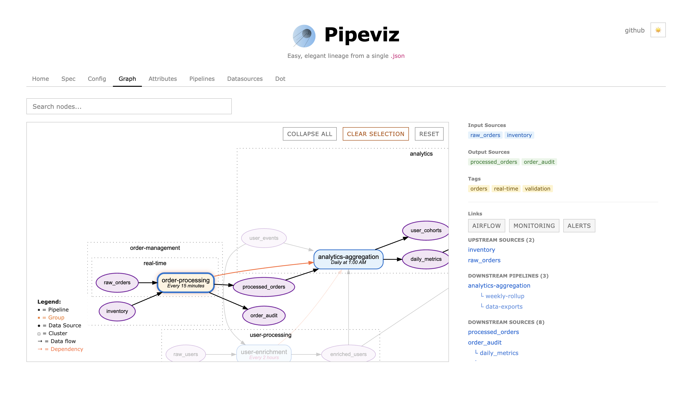
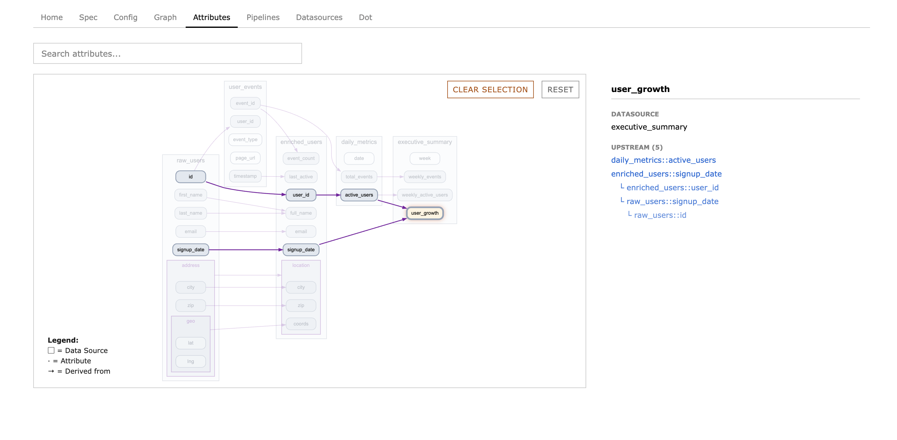

pipeviz
pipeviz
Data lineage from a single JSON file. No backend, no database, no accounts. Declare your pipelines and datasources, get a graph and an MCP server your LLM can query directly. Works with any stack.
But seriously, why pipeviz?
Mermaid / hand-drawn diagrams go stale the week after you draw them. Nobody updates them. They live in a wiki nobody reads.
DOT / Graphviz scripts get the layout right but have no interactivity, no blast radius, no lineage queries. You are writing a rendering format, not a spec.
OpenLineage / Marquez need runtime agents, a metadata store, and infrastructure. Great if you have the team to run it. Most don't.
dbt gives you lineage but only for dbt models. Your Spark jobs, Kafka streams, and cron scripts are invisible.
Pipeviz is a JSON file you check into git. It works with anything because it doesn't care how your pipelines run. You describe what reads what and what writes what. Pipeviz computes the rest.
How it works
A pipeline reads from input datasources and writes to output datasources. A datasource is any data asset: a table, a bucket, an API. Pipeviz builds a DAG from these relationships and renders it with Graphviz.
What you get
- Interactive graph with click-to-highlight lineage
- Blast radius: what breaks if a node goes down, and who to notify
- Backfill planner: topologically sorted parallel stages
- Column-level lineage with nested type support
- Collapsible pipeline groups and clusters
- Focus mode to isolate a subgraph
- An MCP server so your LLM can query all of the above
Pipelines can declare schedule, duration, cost,
owner, owners, users,
tags, cluster, and arbitrary links. All optional.
Minimal example
{
"pipelines": [
{
"name": "etl-users",
"input_sources": ["raw_users"],
"output_sources": ["clean_users"]
}
],
"datasources": [
{ "name": "raw_users", "type": "postgres" },
{ "name": "clean_users", "type": "snowflake" }
]
}
Datasources can carry attributes for column-level lineage.
Use :: on the output side to trace provenance back to a source column:
"attributes": [
{ "name": "user_id", "from": "raw_users::id" },
{ "name": "city", "from": "raw_users::address::city" }
]
Nodes can be grouped into clusters (which nest).
Paste or drag-drop JSON into the UI, or load via ?url= query param.
MCP server
Pipeviz ships a zero-dependency MCP server
in /mcp. Point it at your pipeviz JSON and your LLM
gets the full graph as tools.
Add to your Claude Code config (~/.claude.json):
"mcpServers": {
"pipeviz": {
"command": "node",
"args": ["/path/to/pipeviz/mcp/server.js",
"/path/to/pipeviz.json"]
}
}
Or pass the config path via PIPEVIZ_CONFIG env var.
node_infodetails of a pipeline or datasourceupstream_ofeverything that feeds into a nodedownstream_ofeverything downstream of a nodeblast_radiuswhat breaks if a node goes down, and who to notifyblast_radius_diagrammermaid flowchart of the blast radiusfile_blast_radiusblast radius from a source file path (via links.github)file_blast_radius_diagrammermaid diagram of file blast radiusbackfill_ordertopologically sorted stages to re-run downstreamcluster_infoall pipelines and datasources in a clusterowners_ofwho owns and uses a nodenodes_by_personwhat does a person own or usesearch_nodesfuzzy search by namegraph_summaryhigh-level counts, groups, clusters
Same JSON as the web UI. No separate config, no database, no state.
Team workflow
Each team maintains their own JSON file.
Merge them with jq for an org-wide view:
jq -s '{
pipelines: map(.pipelines) | add,
datasources: map(.datasources) | add,
clusters: map(.clusters // []) | add
}' team-a.json team-b.json > all.json
Screenshots

Graph view with clusters and critical path highlighting

Attribute-level lineage between datasources
© 2024-2026 Matthieu Court